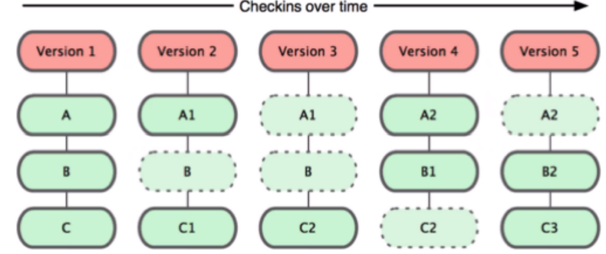
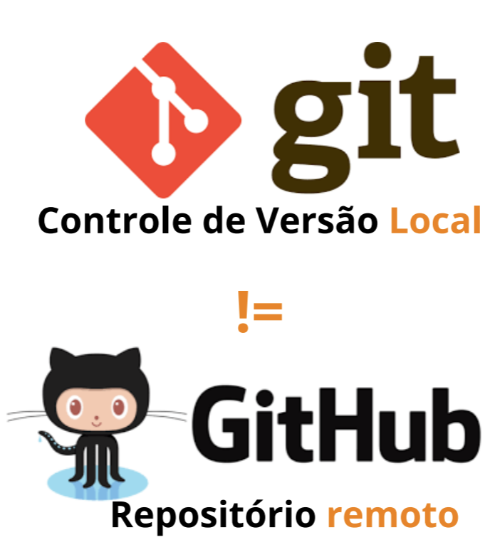
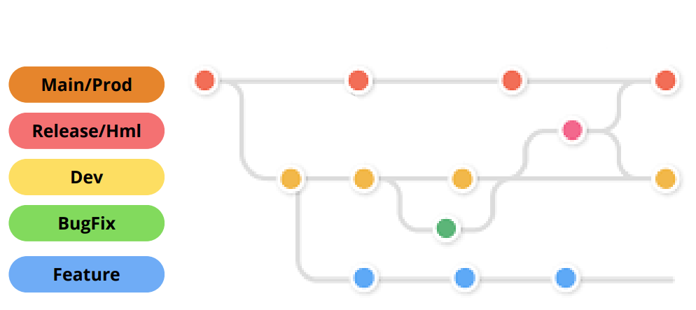
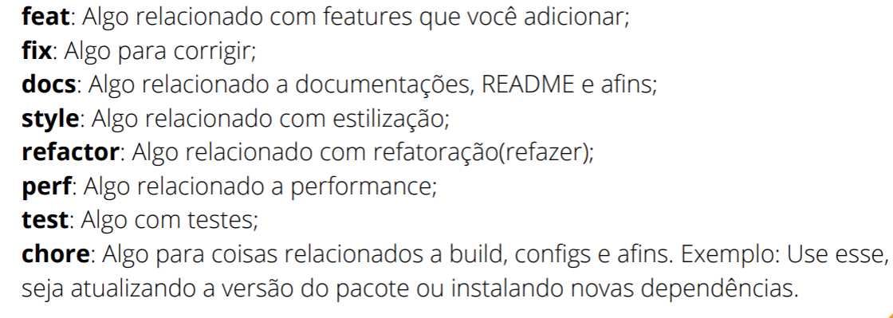

Git
Os Problemas
Preciso voltar o arquivo na versão que estava
antes - rollback - Ctrl+Z;
Deleção de arquivo sem a possibilidade de
recuperação;
Cópias e mais copias de um arquivos:
tcc.docx;
tcc-final.docx;
tcc-agora-vai.docx
solução
Controle de Versão
Os sistemas de controle de versão são ferramentas de
software que ajudam as equipes de software a
gerenciar as alterações ao código-fonte ao longo do
tempo;
BitKeeper
Ferramenta de versionamento que começou a exigir
pagamento das outras empresas de software para
que fosse usada.
o que é o Git
O Git ferramenta de versionamento local, que salva o
estado de cada arquivo na hora do versionamento e
caso o arquivo não sofra a alteração ele cria um link
simbólico para o arquivo não editado.

GitHub
Serviço web compartilhado para projetos que utilizam
o Git para versionamento. É um local de
armazenamento de código.

Os Problemas
Como trabalhar em equipe, utilizando o
controle do Git, para que tenhamos um
controle de versão?
Como compartilhar o conhecimento(o
código fonte)
Branchs
É útil em situações nas quais você deseja
adicionar um novo recurso ou corrigir um erro,
gerando uma nova ramificação garantindo que o
código instável não seja mesclado nos arquivos
do projeto principal
Equipe

Download - Instalação Git
paso a paso da istalação


Verificação
Abra o CMD, Terminal de Comando, Shell ou PowerShell
Digite git --version

Configuração

Inicializando - Local

Crie uma conta no GitHub
Pesquise sobre os seguintes comandos no Terminal de Comando (o que você abriu anteriormente)
Pesquise sobre os seguintes comandos:

vamos cofigurar o github
SSH - GitBash
Verificar se existe chave ssh.
ls -al ~/.ssh
Adicionar uma nova chave. (ID)
ssh-keygen -t ed25519 -C "seu_email@examplo.com"
Inicializar agente-ssh.
eval "$(ssh-agent -s)"
Adicionar chave ssh ao agente.
ssh-add ~/.ssh/id_ed25519
Copiar chave ssh.
clip < ~/.ssh/id_ed25519.pub
Adicionar chave no github
Github -> Settings -> SSH and GPG keys -> New SSH key -> Colar
*Coloque um título que identifique a chave*
Testar conexão
ssh -T git@github.com
yes
Iniciando um projeto
Você foi contratado para desenvolver um programa WEB,
utilizando o git e github para versionamento.
O sistema irá conter uma página inicial de bem vindo.
Conterá uma segunda página, para implementação futura, de um
formulário.
Processo
Inicializar um projeto - index e form;
Criar a branch dev - proteger contra deleção;
Melhorar o form e subir em feat;
Merger feat em dev;
Mergear dev em main;
Realizar um revert;
Comandos
depois
Crie uma branch de DEV e bloqueie contra exclusão.
Após ajuste o formulário para enviar o nome e a
senha de um usuário.
*NUNCA COMMITAR NA MAIN/MASTER/PROD*
por isso abrimos branchs:
